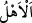

olur.
“Ne de” evlerinin dışında iseler “âilelerine dönebilirler.” Bilakis korkunç ses onları
yakalar oldukları yerde ölürler. Artık yanlarında olanlar vasiyet edemezler; yanlarında
bulunmayanlara doğru da dönemezler. Yani çarşıdan eve dönmeye mecalleri bulunmaz.
Velhasıl çarşıda düşmanlık, kavga ve alışverişle meşgul iken, dünya işleriyle uğraşırken
birden İsrafil sûra üfler ve Allah’ın dilediği hariç bütün mahlûkât bulundukları yerde
ölürler. Nitekim Zümer sûresinde (39/68) gelecektir.
“__WORD__ kelimesi eşler, çocuklar, köleler, câriyeler, akraba, arkadaşlar ve bunların
tamamı olarak tefsir edilir. Nitekim İbn Melek’in Şerhu’l-Meşârık’ında böyle
geçmektedir. Râğıb der ki: “Kişinin ehli, onunla kendilerini neseb, din ve bunlar yerine
geçen iş, ev, belde ve san’atın bir araya topladığı kimselerdir. Kişinin ehli aslında
onunla kendilerini bir meskenin bir araya getirdiği kimselerdir. Daha sonra kişi ile
kendilerini nesebin bir araya getirdiği kimselere de kişinin ehl-i beyti denilmiştir.
“Kişinin ehli” sözüyle hanımı ifâde edilir.
Bilesin ki ölüm insanı pek hızlı yakalar. İnsan bütün arzularına ulaşamaz. Şu halde
kula düşen emelleri kısa tutarak durumunu düzeltmektir.
Şeyh Sa’dî Bostân’da der ki:
Sen kâr ve mal düşüncesiyle gafilken,
Ömrünün sermayesi ayaklar altında kaldı
Senin akıl gözünü sevda tozları kapamış;
Bu heva, bu heves ömrünün tarlasını sam yeli gibi yakmış
Haberin var mı ey kemikten kafes?
Senin canın nefes dedikleri bir kuştur
Kuş bir kere ipten kurtulup kafesten çıktıktan sonra,
Ne kadar çalışırsan çalış onu bir daha avlayamazsın
Sakın fırsatı kaçırma, çünkü dünya bir tek nefesten ibarettir;
Âlim’in nazarında bir nefes, bir cihandan daha kıymetlidir
Vaktiyle dünyaya hükmeden İskender,
Giderken bir an içinde dünyayı bıraktı
Fakat mümkün olmadı dünyayı verip yeniden
Bir nefeslik mühlet alması
Dünya dilberine gönül bağlama;
Bu dilber kiminle oturduysa onun kalbini koparmıştır
Şimdi gaflet yakasından başını kaldır
Ki yarın utançla önüne bakmayasın
Bir yol tut, Allah’ın sevgisini kazan.
Bir şefaatçi bul, bir özür dile
Yoksa zamanın devriyle hayatının kadehi dolduğu vakit,
Aman dileyecek bir an bulamazsın.